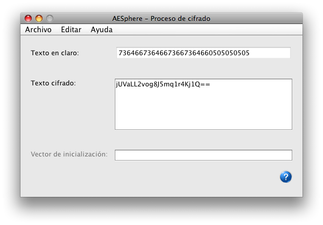

In this window we can see the result of the encryption process that has been performed in the application.
In the "Plaintext" field we have the text that we indroduced for encryption in hexadecimal format.
in the "Ciphertext" field we have the result of the process in the previously chosen format. We have to save the contents of this field if we want to decrypt it later.
If we chose "CBC" as encrypting method, in the field "Initialization Vector" we can see the vector that has been used for the process.
For a more detailed information, please see:
Encryption